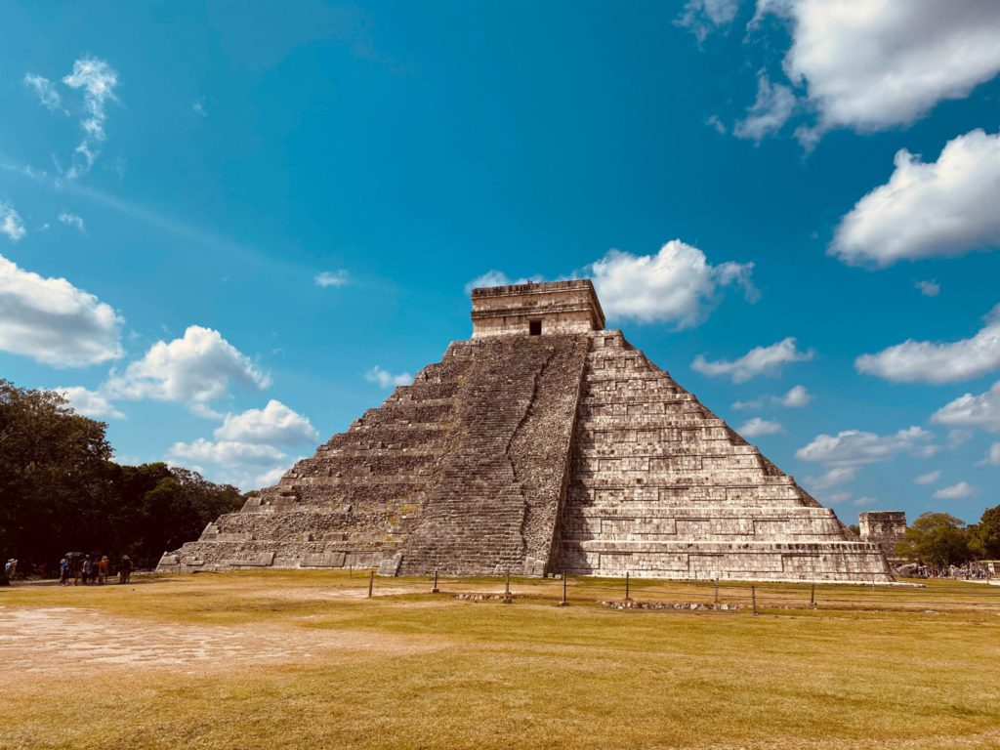

Remontons vers le sud pour nous diriger cette fois vers le Mexique, berceau de la civilisation maya. Parmi ses vestiges, celle-ci laissa la ville de Chichen Itza. Datant du 10ème siècle de notre ère, et située dans la péninsule du Yucatan, la ville maya fut vraisemblablement un important centre religieux. Sa construction à cet endroit s’explique par la présence de plusieurs puits naturels, une richesse immense pour une région si aride. Le site de Chichen Itza comprend plusieurs structures spectaculaires, notamment la pyramide appelée « El Castillo ». Dédiée à Kukulkan, le serpent à plumes, cette structure haute de 30 mètres est remarquable par son architecture produisant des effets sonores et visuels mystiques, comme l’ombre d’un serpent descendant le long de ses marches…